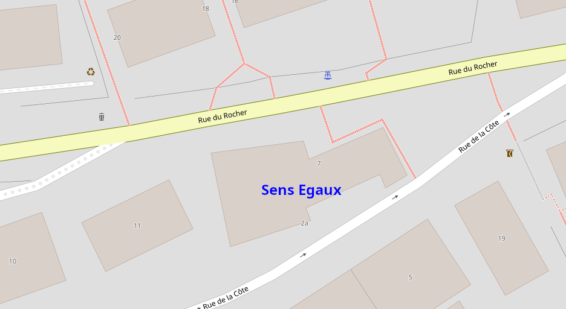
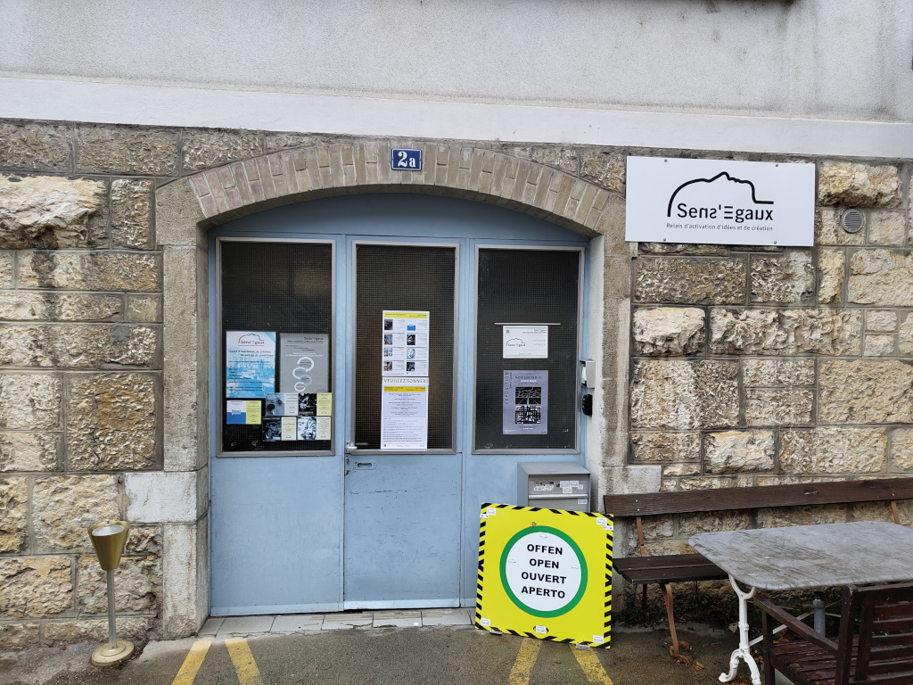

Bienvenue sur le site web
du Repairmanent !
Le Repairmanent est un repair-café qui se tient chaque 2ème et 4ème jeudi du mois de 16h à 20h, dans les locaux de Sens'Egaux, rue de la Côte 2a à Neuchâtel.
Prochaines dates :
- jeudi 13 février 2025
- jeudi 27 février 2025
- jeudi 13 mars 2025
- jeudi 27 mars 2025
Accès :


N'hésitez pas à sonner. Un.e membre de l'association Sens'Egaux viendra vous ouvrir.
Le Repairmanent se tient au premier étage, autour d'une grande table au fond de l'atelier à droite en sortant de l'escalier.
Principes :
- Le Repairmanent n'est pas un service de réparation.
- Les participants réparent leurs objets avec l'assistance des bénévoles.
- Il n'est pas nécessaire de prendre rendez-vous. Les outils sont à disposition dès 16h. En cas de forte affluence, les bénévoles accompagnent les participants selon leur ordre d'arrivée.
- La participation est gratuite. Une cagnotte est à disposition des participants qui souhaitent soutenir le Repairmanent mais un don n'est pas obligatoire
- Les participants seront accompagnés même s'ils n'ont pas d'expérience technique.
- Les bénévoles ne réparent pas les objets hors de la présence des participants, sauf sur la proposition du bénévole.
- Si des pièces doivent être commandées par les bénévoles, une compensation correspondant aux frais pourra être demandée au participant.
- Les bénévoles peuvent refuser d'assister une réparation, en particulier si l'objet présente des risques pour son utilisation future.
- Il sera demandé aux participants de remplir une fiche d'inscription (PDF) :
- Des données statistiques pourront être transmises à la FRC concernant les type d'appareils réparés et le taux de réussite.
- Les données de contact des participants seront utilisées en cas de commande de pièces.
- Les participants qui le souhaitent peuvent choisir de s'inscrire à la lettre d'information de l'association Sens'Egaux.
Exemples d'objets pouvant être réparés :
- Petit électroménager : machine à café, mixeur, aspirateur, robot ménager, etc...
- Petits appareils électroniques : hauts-parleurs, platine disque, etc...
Objets non pris en charge au Repairmanent :
- Vélos : le Black Office vous accueille les mercredis et samedis.
- Ordinateurs et téléphones portables : plusieurs boutiques peuvent vous offir un service de réparation.
Contact :
- Pour tout renseignement, merci d'utiliser l'adresse : contact@repairmanent.example.ch
- L'équipe du Repairmanent est bénévole, merci d'être patient si notre réponse devait tarder.
Liens :
- Merci de consulter notre page sur l'annuaire FRC pour toutes les dates du Repairmanent, ou d'un autre repair-café plus proche de vous.
- Le Black Office est un atelier d'auto-réparation de vélos qui peut vous accueillir les mercredis de 17h à 20h ainsi que les samedis de 14h à 17h.
- L'association Sens'Egaux est un espace d’expression, de (co)création et de partage de savoir-faire, qui accueille gracieusement le Repairmanent.
Dates 2025
- jeudi 9 janvier 2025
- jeudi 23 janvier 2025
- jeudi 13 février 2025
- jeudi 27 février 2025
- jeudi 13 mars 2025
- jeudi 27 mars 2025
- jeudi 10 avril 2025
- jeudi 24 avril 2025
- jeudi 8 mai 2025
- jeudi 22 mai 2025
- jeudi 12 juin 2025
- jeudi 26 juin 2025
- jeudi 10 juillet 2025
- jeudi 24 juillet 2025 (congé)
- jeudi 14 août 2025
- jeudi 28 août 2025
- jeudi 11 septembre 2025
- jeudi 25 septembre 2025
- jeudi 9 octobre 2025
- jeudi 23 octobre 2025
- jeudi 13 novembre 2025
- jeudi 27 novembre 2025
- jeudi 11 décembre 2025
- jeudi 25 décembre 2025 (congé)